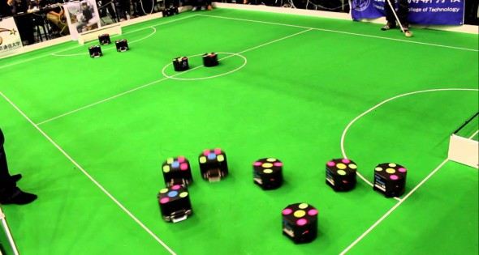
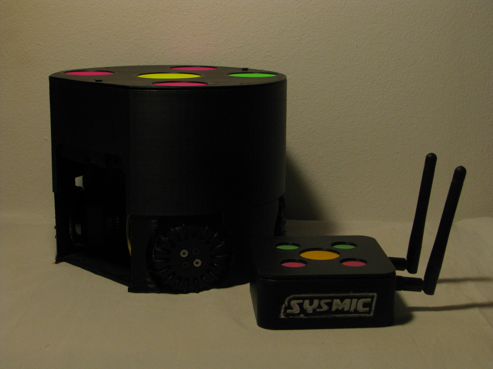

Quiénes somos
Somos Sysmic, el equipo de robótica de la Universidad Técnica Federico Santa María que compite en la liga RoboCup Small Size League (SSL).

Historia
Historia del equipo en construcción. Próximamente contaremos nuestra trayectoria en las competencias internacionales de RoboCup.
El equipo

Información del equipo en construcción. Conoce a los miembros que hacen posible nuestra participación en RoboCup.
Auspiciadores
-

Caleuche -

DI -

IRE -

Electrónica USM -

UTFSM